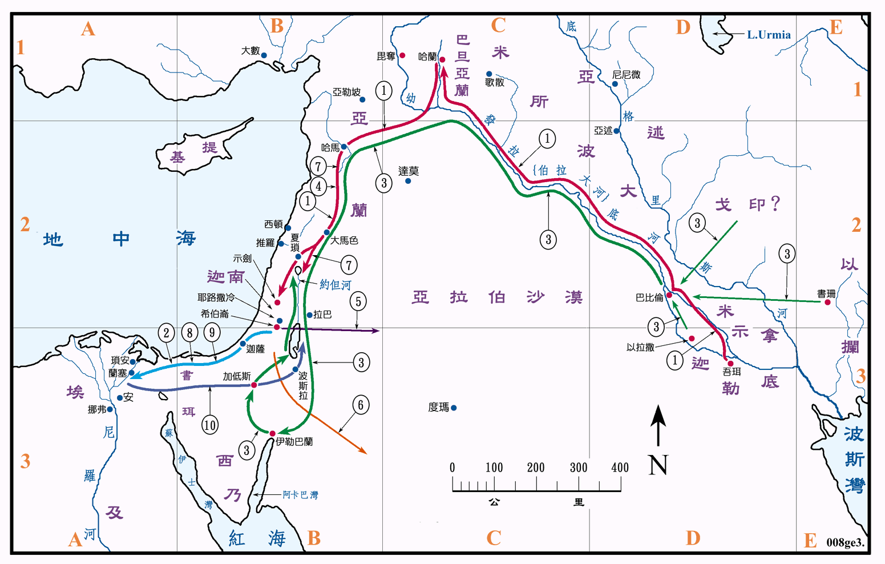

2100～1805BC 约300年

行动线说明
| 序号 | 圣经 | 说明 |
|---|---|---|
| 1 | 创11:27-12:9 | 亚伯兰离开吾珥去哈兰，再去迦南。(参看创图04) |
| 2 | 创12:10-13:3 | 亚伯拉罕去埃及再回迦南。(参看创图04) |
| 3 | 创14:1-5 | 北方四王攻打南方五王。(参看创图06) |
| 4 | 创24章 | 亚伯拉罕差人到米所波大米为以撒娶妻。(参看创图08) |
| 5 | 创25:6 | 亚伯拉罕打发他的六个庶子往东方去居住。 |
| 6 | 创25:17-18 | 以实玛利后裔的住处。 |
| 7 | 创27:43-31:21 | 雅各去哈兰后携眷返。(参看创图09) |
| 8 | 创37:12-28 | 约瑟被卖至埃及。(参看创图11) |
| 创39章至41章 | 约瑟在埃及，受到法老王的重用。 | |
| 创42:1-45:15 | 迦南地因 荒，雅各令儿子们去埃及籴粮，在埃及与约瑟重逢。 | |
| 9 | 创46:1-47:12 | 雅各全家到埃及，受法老的厚待。(参看创图11) |
| 创47:27 | 以色列人住在埃及的歌珊地，他们在那里置了产业，并且生养众多。 | |
| 10 | 创50章 | 雅各遗体运回希伯仑。(参看创图11) |
本图将创世记内族长们在迦南地以外活动的地点绘出，主要有迦勒底、哈兰和埃及。吾珥是一个早在 5000BC 以前就已存在的文明古城，也是示拿地的政治、文化、宗教和贸易的中心，其文化水准在其他各地之上，当亚伯兰离开之时，约是 2100BC，正是吾珥王朝和苏美文化最鼎盛的时期，所以要离开这种最繁荣之地，而去落后地区，的确是一个很大的牺牲，也要有极为大的信心和勇气。
亚伯兰一家人，可能是沿着幼发拉底河西岸的商业大道前往迦南，沿途经过巴比伦城、利马、哈兰和大马色等大都市，旅程约在1600公里以上，在当时的交通条件下，虽然是分为两段，但仍然不是一件轻易的事。
当时的埃及，大约是在第一居间期 (2200～2000BC)，它的首都可能是在孟斐斯或是安城，其中央政府的权势正日渐衰退，但仍然对迦南地保有相当的控制力。到了中王国 (2000～1780BC) 第十二王朝时，再度兴起一个强有力的中央政府，分别建都在底比斯和孟斐斯，对外与赫帝国和亚兰争雄，其势力直达叙利亚，迦南地也包括在内。
北方四王攻打南方五王的故事，也显示了当时米所波大米地区和迦南地之间的关系，虽然两者相隔有两千馀公里之远，但却已有了频繁的商业和军事的活动，也显示了当时的一些国际关系的模式。